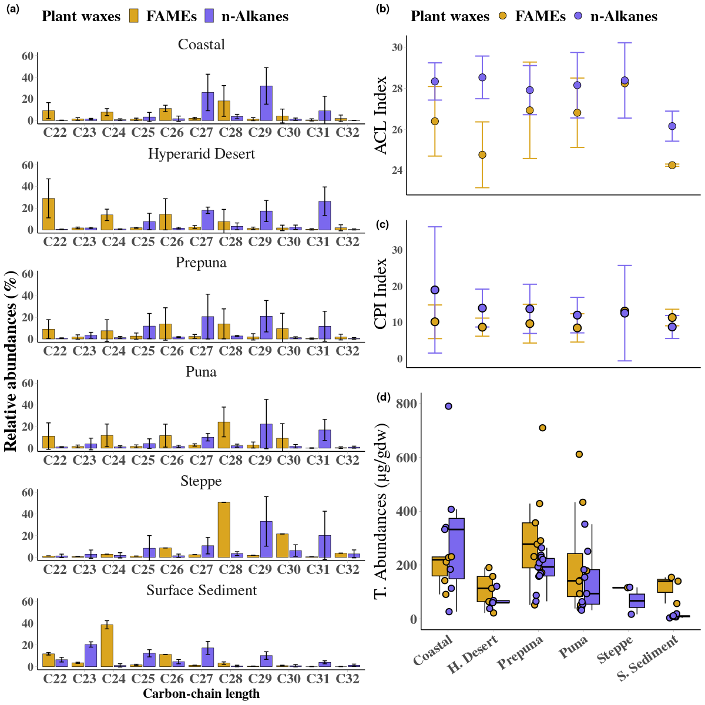
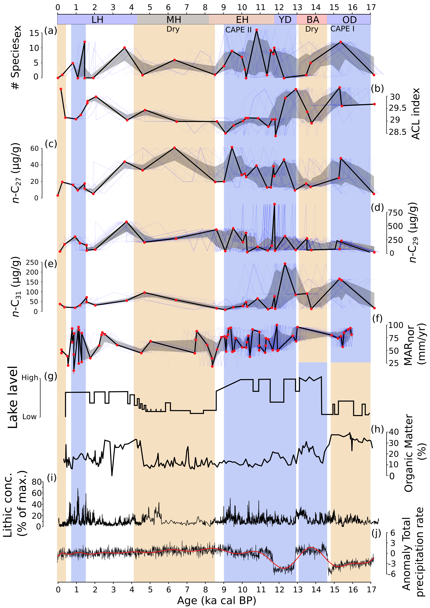
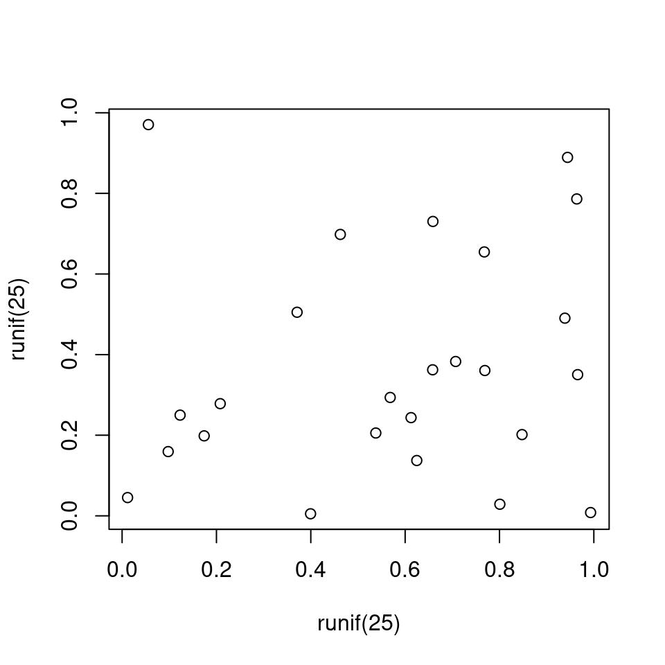

| wax | n | mean_abundance | sd_abundance | median_CPI | mad_CPI | median_ACL | mad_ACL |
|---|---|---|---|---|---|---|---|
| Middens | |||||||
| n-Alkanes | 28 | 335.41158 | 239.295619 | 18.461910 | 5.44384077 | 29.12240 | 0.40321519 |
| Surface Sediment | |||||||
| FAMEs | 3 | 117.31495 | 52.518303 | 11.031963 | 2.61510956 | 24.24743 | 0.06611670 |
| n-Alkanes | 6 | 10.44854 | 5.074585 | 9.137297 | 1.97561310 | 25.92026 | 0.63028168 |
| Aloysia deserticola | |||||||
| FAMEs | 3 | 215.48935 | 54.049054 | 2.103820 | 0.39076411 | 28.55057 | 1.03106886 |
| n-Alkanes | 3 | 210.95087 | 24.434815 | 5.846915 | 0.38010692 | 29.48836 | 0.06113192 |
| Atriplex imbricata | |||||||
| FAMEs | 8 | 286.81215 | 218.972281 | 9.905374 | 3.76662109 | 26.03645 | 1.45313837 |
| n-Alkanes | 8 | 141.81598 | 75.485040 | 18.360459 | 5.45399686 | 27.49319 | 1.33151406 |
| Cristaria integerrima | |||||||
| FAMEs | 1 | 91.15866 | NA | 5.796533 | 0.00000000 | 25.69106 | 0.00000000 |
| n-Alkanes | 1 | 339.86887 | NA | 12.427098 | 0.00000000 | 27.07403 | 0.00000000 |
| Ephedra sp. | |||||||
| FAMEs | 2 | 913.46960 | 992.635678 | 12.947829 | 5.88178808 | 27.41692 | 0.65451011 |
| n-Alkanes | 2 | 70.36172 | 61.312032 | 8.223281 | 4.45716247 | 28.16296 | 1.57494303 |
| Haplopappus rigidus | |||||||
| FAMEs | 2 | 236.03747 | 278.924811 | 7.319356 | 4.82673389 | 26.59827 | 2.17361163 |
| n-Alkanes | 4 | 207.11847 | 58.632182 | 11.599664 | 2.34967561 | 26.27221 | 1.19129699 |
| Jarava frigida | |||||||
| FAMEs | 5 | 115.10662 | 46.286095 | 13.141929 | 3.20422685 | 28.58114 | 0.83168444 |
| n-Alkanes | 7 | 97.38671 | 116.663841 | 13.301322 | 10.84899836 | 28.85701 | 0.78851809 |
| Junellia seriploide | |||||||
| FAMEs | 2 | 375.88277 | 333.235859 | 8.293965 | 1.64251416 | 24.91031 | 0.12623827 |
| n-Alkanes | 2 | 79.04812 | 21.342944 | 11.519030 | 2.02671942 | 28.60531 | 0.05760277 |
| Nolana aplocaryoides | |||||||
| FAMEs | 1 | 142.39482 | NA | 6.381062 | 0.00000000 | 25.15165 | 0.00000000 |
| n-Alkanes | 1 | 332.41291 | NA | 23.721943 | 0.00000000 | 28.85614 | 0.00000000 |
| Perityle emoryi | |||||||
| n-Alkanes | 1 | 789.95012 | NA | 14.463342 | 0.00000000 | 28.92927 | 0.00000000 |
| Sp2 | |||||||
| FAMEs | 1 | 227.98959 | NA | 14.979941 | 0.00000000 | 24.10160 | 0.00000000 |
| n-Alkanes | 1 | 407.16792 | NA | 56.383496 | 0.00000000 | 29.00538 | 0.00000000 |
| Sp3 | |||||||
| FAMEs | 1 | 231.15961 | NA | 8.105427 | 0.00000000 | 28.57253 | 0.00000000 |
| n-Alkanes | 1 | 184.31794 | NA | 9.483458 | 0.00000000 | 28.20043 | 0.00000000 |
| Tiquilia atacamensis | |||||||
| FAMEs | 3 | 107.77041 | 53.135379 | 9.943925 | 0.03941876 | 22.93231 | 0.47453506 |
| n-Alkanes | 3 | 89.80569 | 30.591602 | 8.440672 | 0.61098165 | 28.96094 | 0.16799931 |
| TA [ug/gdw]; Total Abundance | |||||||
| TA mad; median absolute deviation form Total Abundance | |||||||
Hydroclimate variations over the last 17,000 years as measured by leaf waxes in vegetation physiognomic and rodent middens from the south-central Atacama Desert, Chile
Abstract
Leaf cuticular waxes are one of the main environment-plant interaction structure systems that enable desert plants to resist extreme climates. We present a long chain n-alkyl lipids study from fresh plant leaves collected along an elevational gradient and from 28 rodent paleomiddens collected from Quebrada Incahuasi (25.6 ºS, 3,600 m asl) in the south-central Atacama Desert of Chile spanning the last 17 ka cal BP. The dominant Atacama plant associations (from the coastal Atacama to the Andean Steppe) are characterized by long-chain (>C24) n-alkanes and n-alkanoic acids. Their specific distribution (i.e. Average Chain Length [ACL] and Carbon Preference Index [CPI]) can be associated with the climatic conditions along our studied gradient. The sum of leaf wax n-alkanes shows the highest concentrations associated with wet conditions, whereas n-alkanoic acids (between n-C24 and n-C28) increase with hiperaridity. In fact, paleomidden n-alkane time series showed a similar change where the greatest changes in leaf wax n-alkane distribution (ACL and CPI) coincided with the greatest increase in moisture during the Central Andean Pluvial Event (CAPE; between 18 and 9 ka cal BP) and the Late Holocene. The shift in paleomidden n-alkanes distribution is corroborated by the relative abundance of rainfall-dependent extra-local taxa. This is the first study reporting leaf wax content obtained from ancient rodent middens, and shows promising results as a robust hydroclimate proxy for this arid region.
Introduction
Establishing the magnitude and timing of past climate changes that have modulated landscape dynamics forms part of the necessary knowledge for achieving sustainable social-ecological systems on a warming planet (Berdugo et al. 2020; Lavorel and Garnier 2002; Mucina 2019). However, we do not know ecosystem’s nonlinear responses and thresholds to extreme and abrupt climatic variations, nor how these affect ecological adaptation and the configuration of landscape physiognomy (Berdugo et al. 2020; Eshel et al. 2021; Halbritter et al. 2018).
The central Andes, a natural laboratory for understanding biological responses to extreme environmental changes, has experienced pronounced hydroclimatic variations throughout the Quaternary that are unprecedented in the instrumental record (Arroyo, Armesto, and Villagran 1981; J. L. Betancourt et al. 2000; Gayo et al. 2012; Grosjean 2001; Houston and Hartley 2003; Jara, Maldonado, and de Porras 2022; Latorre et al. 2002; Quade et al. 2022; Rech, Quade, and Betancourt 2002; Rodbell et al. 2022; Stríkis et al. 2018). Numerous geological records from the western Central Andes have documented the impacts of at least four global/regional climatic changes during the last glacial termination. The Central Andean Pluvial Event (CAPE) (Latorre, Betancourt, and Arroyo 2006; Martin et al. 2018; Nester et al. 2007; Quade et al. 2022, 2008); subdivided into CAPE I (from ca. 18 and 14 ka cal BP, Gayo et al. 2012) and CAPE II (ca. 13 to 9 ka cal BP, Quade et al. 2008) was interrupted by a millennial-scale drought between c. 14-13 ka cal BP (Workman et al. 2020). A period of extreme aridity prevailed at the onset of the Middle Holocene (ca. 8-7 and 5-4 ka cal BP, González-Pinilla et al. 2021; Grosjean and Núñez 1994; Valero-Garcés et al. 1996). A wet Medieval Climate Anomaly (MCA) between ca. 950 and 750 a cal BP (Lüning et al. 2019; von Gunten et al. 2009), relatively well described only in a few records was followed by drought at the onset of the Little Ice Age (LIA) ca. 650 and 100 a cal BP (González-Pinilla et al. 2021; Mujica et al. 2015; Rabatel et al. 2008, 2005). It is not entirely clear what impact these changes had on vegetation physiognomy and how it reconfigured in response to climatic dynamics or whether, on the contrary, species distributions remained relatively similar to their current floristic diversity (Díaz et al. 2012). The studies of sedimentary pollen sequences, plant macrofossil remains from palaeomiddens and climatic niche models show that Atacama ecosystems can be highly resilient to past climatic changes (Anjos and Toledo 2018; Díaz et al. 2019; Latorre et al. 2002; Maldonado et al. 2005). Recurrently, palaeomiddens contain remains of extra-local taxa (species outside their current distribution range) that coincide with stage or pulses of increased or decreased moisture, suggesting plant incursions into completely different environments today (Latorre et al. 2002). This redistribution of species inferred from the geological record resulting from environmental changes, implies that Atacama plant communities exhibit greater plasticity than observed at present, capable of configuring plant assemblages that we do not currently find in these environments (Navarro et al. 2022; Stotz et al. 2021).
The photosynthetic part of the plant is one of the plant structures best adapted to tolerate extreme environmental conditions and the leaves of Atacama plants are highly specialized to tolerate high levels of temperature, humidity, radiation, salinity, wind and herbivory stresses (Dussarrat et al. 2022; Eshel et al. 2021). Cuticular waxes play a fundamental role in protecting plants from these stressors (Pollard et al. 2008). These waxes are mostly exuded from the leaves of plants and occur in small quantities (Eglinton 1973). Chemically, leaf waxes are aliphatic hydrocarbon structures (mixtures of n-alkanoic acids, n-alkanes, n-alkanols, aldehydes and wax esters) highly persistent over time and have long been considered geochemical biomarkers of higher plants in the palaeoenvironmental record (Didyk et al. 1978; Kolattukudy 1970). This interest is mainly due to the relationships that have been found between their molecular abundances and isotopic fingerprint with climatic and environmental changes (Castañeda and Schouten 2011; Chikaraishi and Naraoka 2003; Inglis et al. 2022; Sachse, Radke, and Gleixner 2006; Schefuß et al. 2003; Smith and Freeman 2006). In the Atacama Desert, little is known about the composition and distribution of n-alkyl compounds in plant communities and their relationship to past climatic changes (Contreras et al. 2022; Mörchen et al. 2021). The n-alkane abundance and distribution in different functional types of terrestrial plants show that \(C_{31}\) alkane predominates in grasses and \(C_{27}\) and \(C_{29}\) alkanes in woody plants (Bush and McInerney 2013). Recent studies on n-alkanes in Atacama plants show a predominant distribution of long chains related to moisture sources rather than a chemo-taxonomic marker of plants studied (Mörchen et al. 2021). Similarly, (Contreras et al. 2022) found significant negative correlations between fatty acid Carbon Preference Index (CPI) and n-alkane Average Chain Length (ACL) from Tillandsia landbeckii (CAM plant), both measures of leaf wax distribution, with both precipitation and surface evaporation; a species highly specialized in capturing moisture from coastal fog, which points to adaptations to low moisture availability along the coast.
This research addresses whether it is possible to identify changes in aridity and detect the transgression of extra-local taxa in the landscape physiognomy by studying leaf n-alkyl lipid abundances in a series of palaeomiddens across major climatic transitions in the Atacama Desert during the last 17 ka cal BP. The study first measured the abundance and distribution in present-day leaf waxes of dominant landscape plants along an altitudinal transect from the coast to the Andes in the Atacama region. The n-alkanes from this vegetation were then used to compare the distributions and abundances of long chain n-alkanes obtained from a series of fossil middens for: 1) the n-alkanes are the most studied waxes in the palaeoenvironmental record, 2) they are found in high concentrations in the palaeomiddens, and 3) there are current studies of waxes from other places in the Atacama Desert with which to compare our results. In the following sections, we will describe the abundances and distributions of leaf waxes along an altitudinal gradient in the Atacama Desert, and then illustrate for the first time them application as a hydroclimate proxy in a series of palaeomiddens located in the south-central Atacama Desert, along a transition zone between a high elevation vegetation belt and absolute desert. Finally, we interpret and discuss the implications of changes in the abundance and distribution of leaf wax n-alkanes in the context of changes in the plant physiognomy of the Atacama environments and their contribution as a proxy for palaeoenvironmental reconstructions in arid zones.

Material and methods
Site description and sampling
The Atacama Desert extends over more than 128,000 km2 between the Pacific Ocean and the plateau of the western slopes of the Andes Mountains. The aridity and hyperaridity of the Atacama Desert are due to a combination of three main factors; rain shadow created by high Andes and Altiplano, the temperature inversions along the Pacific coast at ca. 1000 m asl and the blocking of moisture from westerlies by the South Pacific High. The plant richness pattern from the Atacama Desert is strongly related to environmental factors generating vegetation “belts” or zones (Díaz et al. 2019, 2016; C. Villagrán, Armesto, and Kalin Arroyo 1981, Figure 1). We used the plant physiognomy (Carolina Villagrán, Kalin Arroyo, and Marticorena 1983; Arroyo, Armesto, and Villagran 1981) to define six vegetation belts or zones (Steppe; 4,500-4,000 m asl, Puna; 4,000-3,300 m asl, Prepuna; 3,300-2,400 m asl, Absolute Desert; 2,400-2,000 m asl, Desert; 1,000-2,000 m asl and Coastal Desert; 1,000-0 m asl) to categorize and characterize the leaf wax n-alkanoic acid and n-alkane abundance (Figure 1 and Table 1). Modern plant sampling was carried out in August 2018 during the dry season in the Atacama Desert. We collected fresh leaves of the dominant species in 15 sites along an elevation gradient from the coast (MAP; ~ 4 mm, MAT; ~ 14\(^\circ\)C) until 4,300 m asl following the methodology described in (Díaz et al. 2019; Díaz et al. 2016,as shown in Figure 1). We selected the dominant species (at least 50\(\%\) plant cover at each site) from each vegetation belt for wax analysis. The plants were collected, pressed and dried in the field, and later placed in a drying oven at 50\(^\circ\)C in the laboratory (see Supplementary Table 2). We selected thirteen species for molecular analyses based on their abundance distribution within each zone (Aloysia deserticola, Atriplex imbricata, Atriplex sp., Cristaria foliosa, Ephedra sp., Haplopappus rigidus, Pappostipa frigida (Stippa frigida), Pappostipa sp., Junellia seriphioides, Nolana aplocaryoides, Perityle emoryi, Tiquilia atacamensis). In 2017, we collected 28 rodent middens from Quebrada Incahuasi (QIN; 25\(^\circ\)C 35’ 52”S, 69\(^\circ\)C 14’ 18” W) located west hillside of the Domeyko mountain between 3,530 and 3,620 m asl (Table 2). In this area, Puna vegetation appears between 3,200 and 4,000 m asl and consists mostly of widely spaced shrubland plants; it is characterized by the shrubs Junellia bryoides, Ephedra americana, Maihueniopsis sp., Cryptantha sp., Pappostipa frigida, Baccharis tola, Haplopappus sp., Gillia sp., Cistante sp., Adesmia hysterix, Phacelia cumingii and Phacelia pinnatifida.
Rodent middens and macrofossil analysis
Fossil rodent middens were collected in October 2003 from Quebrada Incahuasi along ignimbrite overhangs and rock shelters. Quebrada Incahuasi (QIN) is an east-trending, short, narrow valley located above 3500 m asl. The valley heads into the Altiplano (Atacama Region) at over 4300 m asl. Large alluvial fans stem from the northern and southern ignimbrite cliffs and escarpments to the bottom of the valley. Middens were collected mostly along these escarpments. Vegetation in the valley is mostly contracted (i.e., mostly occurs in places along cliff walls or in the dry washes and other places where water accumulates) and is dominated by shrubs (Junellia bryoides, Baccharis tola, Haplopappus rigidus) and steppe grasses (Pappostipa frigida). Middens were processed following previously described procedures ((J. L. Betancourt et al. 2000; Julio L. Betancourt and Saavedra 2002; Latorre et al. 2002)). A modern analogue approach was used to control for the presence of extra-local species in the record; we collected all plant species present to within 500 m around each midden and compared it with the regional vegetation. Midden fecal-pellet sizes and shapes are used for distinguishing the midden-forming agents. Plant macrofossils were quantified and identified by comparison with the plants collected at the sites and a reference collection at the Laboratory of Paleoecology and Paleoenvironments of the Department of Ecology, P. Universidad Católica de Chile. Based on the foregoing analysis, annual, herbaceous, perennial plants, as well as, Puna, Prepuna and Steppe affinities were identified. Taxa present in each midden were quantified with a relative abundance index (where 0 is absent and 5 is dominant, Spaulding 1990). Approximately 100 mg of rodent feces from each of the 31 middens were submitted for 14C dating at the Accelerator mass spectrometry (AMS) laboratory at University of California Irvine (UC Irvine). Radiocarbon ages were calibrated using the SHCal20 calibration curve (Hogg et al. 2020) and reported in ka (thousands of calibrated years before present – defined as ad 1950).
Extraction and quantification of n-alkanes and n-alkanoic acids
The total lipid extract (TLE) was obtained using a Milestone Ethos Easy Microwave Assisted Extraction (MAE) system by extracting 0.5 g of dry leaf with 20 ml dichloromethane:methanol (DCM:MeOH) (9:1, v/v). 25 µL of an internal standard mixture of known concentration (containing 1000 ng/µL of cis-10-nonadecenoic acid, 5 alpha-cholestane and nonadecanol) was added. The MAE was programmed with a ramp to 100 ºC at 10 ºC min -1, a hold time at 100 ºC for 15 min, and a cooling time of 30 min. A blank was included in each sample set, to test the presence of contaminants prior to sample analysis. The TLE was separated into three fractions using aminopropyl solid phase separation columns, eluting first with DCM:2-propanol (2:1, v/v) (n-alkane; neutral fraction), glacial acetic acid (GAA):ether (1:24, v/v) (n-alkanoic acid; fatty acid fraction) and MeOH at 100% (phospholipid fraction). The neutral fraction was eluted through activated (at 450 ºC) silica gel using hexane for n-alkanes. The n-alkanoic acids were derivatized with methanolic boron trifluoride (BF3:MeOH), forming fatty acid methyl esters (FAMEs).
n-alkanoic acids and n-alkanes molecular parameters
The n-alkanoic acids and n-alkanes waxes were quantified using gas chromatography with flame ionization detection (GC-FID 7890A; Agilent Technologies) and identified via GC–mass spectrometry (GC–MS:QP-5050A-Shimadzu) based on retention time and spectra of standards for each compound. Peak areas from GC-FID chromatograms were manually integrated to quantify the abundances by comparing with the area of a co-injected standard of known concentration (5⍺-Androstane). Total n-alkane and n-alkanoic acid concentrations in µg g −1 dry weight (dw) were calculated as the sum of n-C19 to n-C33 and n-C18 to n-C34 (odd as well as even ones), respectively. The n-alkanoic acids and n-alkanes leaf wax abundance was calculated per unit dry leaf mass (µg/g). The leaf wax distribution was calculated using the ACL and CPI for n-alkanoic acids and n-alkanes or all samples as shown below:
\[ ACL_{(a-b)} = \sum\limits_{i=a}^{b}\frac{i\cdot {C_{i}}}{C_{i}} \]
where a-b and Ci indicate the range of carbon-chain length and the concentration odd and even for n-alkanes (ACL23-33) and n-alkanoic acids (ACL24-34), respectively.
\[ CPI_{(alkanes)} = 0.5 \cdot \left[(\frac{\sum C_{even}}{\sum C_{odd}}) + (\frac{\sum C_{even}}{\sum C_{odd}})\right] \]
and
\[ CPI_{(FAME_{s})} = 0.5 \cdot \left[(\frac{\sum C_{odd}}{\sum C_{even}}) + (\frac{\sum C_{odd}}{\sum C_{even}})\right] \]
Ceven (carbon 23 to 33) and Codd (carbon 24 to 32) indicate the carbon-chain length abundance even and odd, respectively.
Climate and waxes analysis
To study the relationship between n-alkyl lipid total abundances and climate, we use the CR2MET gridded product which contains regional precipitation, average temperature, minimum temperature and maximum temperature values with a resolution of 0.05 degrees (https://www.cr2.cl/datos-productos-grilados/). From this dataset, we calculated 19 bioclimatic layers that were used to evaluate different predictive supervised models of n-alkanes from no more than 3 input parameters. The sensitivity of the best models was evaluated through the boostrapping method. Random Forests (RF) correlations were applied using the scipy library in python3.4.
Results
Abundance and distribution of long-chain (>C21) n-alkyl leaf waxes along an environmental gradient in the Atacama Desert.
The vegetational gradient was dominated by twelve species (~80% landscape); Pappostipa frigida, Atriplex imbricata, Haplopappus rigidus, Ephedra americana, Aloysia deserticola, Junellia seriphioides, Tiquilia atacamensis, Cristaria integerrima, Nolana aplocaryoides, Perityle emoryi and two unidentified species in the coast (see Table 1 and Figure 1S). Figure 1 shows the climatic correlations with individual abundances of each long-chain n-alkyl (n-alkane and fatty acid) leaf wax. Total leaf wax abundance showed a strong second-degree correlation (R2= 0.86 +/- 0.11) with altitudinal cline (Figure 1b). Additionally, these results showed positive correlations with annual mean, annual mean maximum, and annual mean minimum temperature, and negative correlations with annual mean precipitation (Figures S3 and S4). The long chains between n-C26 and n-C29 showed the highest correlation (between R2 = 0.4 and R2 = 0.6) values in all the variables analyzed (see Figures 2S and 3S). In general, we observe a high variability of total abundances in the chain-length of waxes within and between vegetation belts (Figures 1 and 2S). The concentration of n-alkyl foliar waxes tends to be higher in the Coastal, Prepuna and Puna zones compared to the Hyperarid and Steppe, which have the most extreme environmental conditions (Figure 1a and 2S). The highest abundances of n-alkyl waxes occur between 50-200 and 2,500 to 3,700 m asl, coincident with zones with the greatest species richness and abundance. The lower individual molecular abundances were observed in the Hyperarid core (~2,000 to 2,300 m asl) and high Andean altitude (4,000 to 4,400 m asl). The odd-over-even and even-over-odd chain-lengths distributions of n-alkanes and n-alkanoic were more abundant between n-C25 to n-C31 and n-C24 to n-C30, respectively (Figure 2a). The leaf wax n-alkanes and n-alkanoic acids abundance of surface sediment from two brackish lakes in the Atacama Altiplano (Miscanti and Miñiques lakes at 4,200 m asl) showed similar total abundance values to the Steppe but different distribution i.e. CPI and ACL (Figures 2b). The leaf wax n-alkanoic acids (n=3) and n-alkanes (n=6) abundances in these lake sediments were of 375.88 +/- 52 ug/g dw (CPI_median = 11 +/- 2.6; ACL_median = 24.25 +/- 0.07, Table 1) and 10.45 +/- 5 ug/g dw (CPI_median = 9 +/- 1.98; ACL_median = 25.92 +/- 0.63, Table 1), respectively. In n-alkanoic acids, carbon chain-lengths distribution of most abundant chain length is between n-C18 and n-C34 with a higher abundance of short and medium chain (n-C18 to n-C24) and dominance of the carbon length chain n-C18. The high and medium molecular weight ranges are the minority (n-C26 to n-C3) and represent ca. 20% of the n-alkanoic acids in the sediments. In n-alkane, carbon chain-lengths distribution is between n-C23 and n-C33 with a higher abundance of medium and high molecular weight n-C23 and n-C29, however, the abundances were lower than fatty acid (Figure 2).
n-Alkane and plant macrofossil from rodent middens in the Atacama Desert over the last 17,000 years
A total of sixteen different plant taxa were identified covering twelve families; fifteen genera and five species of plant macrofossils (Table 2). Radiocarbon ages from 28 rodent middens reveal a temporal coverage for the last 17 ka cal BP (Table 3). Fecal pellets indicate that the middens were either made mainly by the ashy chinchilla rat (Abrocoma cinerea) and by leaf-eared mice (Phyllotis spp.). In the modern midden 208-B (150 ± 90 cal yr BP at 3592 m a.s.l., south slope; Table 3) we find macro-remains of Haplopappus sp., Junellia bryoides, Gilia sp., Cistanthe sp., Phacelia cumingii, Phacelia pinnatifida, Cryptantha sp. and Ephedra americana —a composition similar to the species collected in the field (Haplopappus sp., Junellia bryoides, Gilia sp., Cistanthe sp., Phacelia cumingii, Phacelia pinnatifida, Cryptantha sp. and Ephedra americana besides Maihueniopsis sp., Baccharis tola and Pappostipa frígida). Among taxa identified at the site, we note that some are quite scarce and slope exclusivities, such as Maihueniopsis sp and Baccharis Tola on the north slope and Pappostipa frígida on the south slope.

| Taxa | Family | Type | Phytogeographic affinity |
| Malvaceae | Malvaceae | -- | -- |
| Chenopodiaceae | Chenopodiaceae | -- | -- |
| Baccharis aff. tola* | Asteraceae | Shrub | Puna |
| Haploppapus sp. | Asteraceae | -- | Dessert |
| Cryptantha sp. | Boraginaceae | Annual | Prepuna |
| Brassicaceae aff. Atacama nivea* | Brassicaceae | -- | Dessert |
| Ephedra americana | Ephedraceae | Shrub | Puna and Prepuna |
| Adesmia sp. | Fabeceae | Annual and perennial herbs | Puna and Prepuna |
| Phacelia cuminingii | Hydrophyllaceae | Annual herbs | Puna and Prepuna |
| Phacelia pinnatifida | Hydrophyllaceae | Annual and perennial herbs | Prepuna |
| Cristaria sp. | Malvaceae | Annual | Puna and Prepuna |
| Pappostipa frigida | Poaceae | Perennial Grass | Steppa |
| Gillia sp. | Polemoniaceae | Annual | Puna and Prepuna |
| Cistanthe sp. | Portulacaceae | Perennial Grass | Prepuna |
| Fabiana sp. | Solaneaceae | Perennial Grass | Puna |
| Junellia bryoides | Verbebaceae | Shrub | Puna |
A diagram of the relative abundances of each taxon along the chronology obtained with AMS 14C dating (Table 3) is shown in Figure 3. Fecal-pellet 𝛿13C values show a range from -21.3 to -25,4 ‰ with a median of -23 ‰. The middens were dominated by the local taxa Junellia bryoides, Cistanthe sp., Ephedra americana and Phacelia cumingii. At ca. 17 ka cal BP, the record shows the presence of only two local taxa (Junellia bryoides and Phacelia pinnatifida) and one extra-local taxa (Adesmia sp.). Between ca. 15.5 and 10 ka cal BP, the record shows an increase in local plant richness and extra-local species such as Stipa frígida, Adesmia sp, Malvaceae, Chenopodiaceae, Baccharis aff tola and Brassicaceae aff Atacamanivea. A great group of middens between ca. 10 and 3 ka cal BP shows a decrease in plant richness with an increase in the annual extra-local Malvaceae family. From 3 to 0.18 ka cal BP, there are increases in the local taxa richness dominated by Junellia bryoides and Cistante sp. with the appearance of Haplopappus sp. and Cryptantha sp., among others.
| ID | Age | sd | Lower cal yr BP | Upper cal yr BP | sd | median | lat | long | Midden agent | |
| QIN208A | 1310 | 15 | 1270 | 1115 | 35 | 1230 | 25.597 | 69.238 | Abrocoma | |
| QIN208B | 180 | 15 | 280 | modern | 90 | 150 | 25.597 | 69.238 | Abrocoma | |
| QIN211 | 8210 | 25 | 9270 | 9010 | 75 | 9105 | 25.597 | 69.238 | Abrocoma | |
| QIN213 | 12855 | 35 | 15505 | 15145 | 90 | 15300 | 25.599 | 69.2429 | * | |
| QIN214A | 14150 | 45 | 17350 | 17040 | 85 | 17185 | 25.599 | 69.2429 | Abrocoma | |
| QIN214B | 10175 | 25 | 11875 | 11635 | 70 | 11780 | 25.599 | 69.2429 | Abrocoma | |
| QIN214C | 12920 | 35 | 15575 | 15245 | 85 | 15400 | 25.599 | 69.2429 | Abrocoma | |
| QIN215A | 5700 | 20 | 6540 | 6315 | 45 | 6440 | 25.597 | 69.2429 | Abrocoma | |
| QIN215B | 1740 | 15 | 1700 | 1535 | 45 | 1600 | 25.597 | 69.2429 | Abrocoma | |
| QIN215C | 3515 | 15 | 3835 | 3645 | 50 | 3755 | 25.597 | 69.2429 | Abrocoma | |
| QIN216 | 7895 | 20 | 8775 | 8545 | 65 | 8635 | 25.597 | 69.23 | Phyllotis | |
| QIN2171 | 8615 | 25 | 9660 | 9480 | 30 | 9540 | 25.596 | 69.22 | Abrocoma | |
| QIN2172 | 8980 | 25 | 10215 | 9905 | 90 | 10060 | 25.596 | 69.22 | Abrocoma | |
| QIN218 | 11035 | 30 | 13070 | 12795 | 60 | 12925 | 25.595 | 69.235 | Abrocoma | |
| QIN219 | 10480 | 30 | 12605 | 12095 | 135 | 12345 | 25.594 | 69.235 | Phyllotis | |
| QIN220A | 9190 | 25 | 10485 | 10230 | 60 | 10300 | 25.594 | 69.235 | * | |
| QIN237A | 2140 | 15 | 2115 | 2005 | 35 | 2065 | 25.594 | 69.235 | * | |
| QIN237B | 1120 | 20 | 1055 | 925 | 40 | 970 | 25.593 | 69.231 | Abrocoma | |
| QIN238 | 9565 | 25 | 11075 | 10690 | 125 | 10865 | 25.597 | 69.238 | Abrocoma | |
| QIN242 | 11705 | 35 | 13600 | 13455 | 45 | 13535 | 25.6 | 69.24 | Abrocoma | |
| QIN243A | 10015 | 25 | 11625 | 11265 | 110 | 11450 | 25.597 | 69.238 | Abrocoma | |
| QIN2451 | 11950 | 30 | 14010 | 13605 | 100 | 13775 | 25.597 | 69.238 | * | |
| QIN2452 | 9125 | 25 | 10340 | 10185 | 35 | 10235 | 25.597 | 69.238 | * | |
| QIN246 | 10200 | 25 | 11925 | 11650 | 55 | 11810 | 25.597 | 69.238 | Abrocoma | |
| QIN249B | 4230 | 20 | 4845 | 4585 | 65 | 4730 | 25.597 | 69.239 | * | |
| QIN256 | 345 | 15 | 445 | 305 | 40 | 395 | 25.593 | 69.231 | Abrocoma | |
| QIN259 | 10105 | 25 | 11765 | 11325 | 125 | 11635 | 25.594 | 69.234 | Abrocoma | |
| QIN260A | 1740 | 15 | 1700 | 1535 | 45 | 1600 | 25.593 | 69.232 | Abrocoma |
The rodent middens contain high wax values spread with a total mean n-alkanes abundance of 335.4 +/- 239 ug/g dw (n=24, CPI_median = 18.46 +/- 5.44; ACL_median = 29.12 +/- 0.4, Table 1 and Figure 4). The chain-length distribution in middens was between n-C21 and n-C35 with a higher abundance of n-C27 to n-C31 chain and predominance of carbon length chain n-C29. The palaeomidden dated to ca. 17 ka cal BP showed a lower abundance in all chain-length distributions. One of the main features of the middens dated to ca. 15.2 ka cal BP and between 14 and 12 ka cal BP was the high n-alkane abundance of longer chains (n-C25 to n-C35) compared to the chain-length abundance between ca. 11 and 5 ka cal BP. The abundances of n-alkane for the youngest samples dated between 5 and 0.18 ka cal BP shows an increase in all chain-length distribution, where the midden with higher n-alkanes abundance was at ~ 4 ka cal BP (Figure 3). Remarkably, the midden dated at 11.7 ka cal BP has the highest concentration of n-alkanes in the record (~1,000 ug/g dw), where the carbon length chain n-C29 dominates. Two grass samples, dated between 970 (QIN237-B) and 11,780 (QIN 214b) ka cal BP, extracted from the palaeomiddens matrix showed high n-alkane values.

Discussion
Distribution of leaf wax n-alkanes and n-alkanoic acids along an altitudinal transect (50–4200 m a.s.l) in the Atacama Desert
Several studies have characterized the relationship between leaf wax concentrations and environmental variables along elevational gradients as an approach to understanding past climatic changes (Cerda-Peña et al., 2020; DeLucia and Berlyn, 2011; Feakins et al., 2016; Jansen et al., 2006; Nieto-Moreno et al., 2016; Shepherd and Wynne Griffiths, 2006). The leaf wax n-alkanes and n-alkanoic acids along the vegetational transect in the Atacama desert show a species-specific and heterogeneous distribution in the chain lengths (Figures 1 and 2). Leaf waxes from Steppe and Puna species have a clear predominance of n-C29/n-C28 chain lengths in n-alkane and fatty acid, respectively. On the other hand, the Prepuna showed a higher abundance on n-C27/n-C26 chain lengths followed by n-C29/n-C28, n-C31/n-C30 and n-C25, respectively. At the coast —where advected fog plays an important role as a moisture source — we found equal abundance of n-C29 and n-C27, while the plants from the Hyperarid Desert showed two different and antagonistic wax distributions where predominate n-alkane n-C31 and a higher n-alkanoic acids abundances of medium chain lengths, as n-C22 followed by n-C26 and n-C24 (Figure 2). Long (how long???) n-alkane chain lengths may be produced by high temperature and low moisture conditions (Dodd et al., 1998; Feakins and Sessions, 2010; Hoffmann et al., 2013). Mörchen et al., 2021 found in ten plant species of the Atacama Desert that the n-alkanes abundance showed a predominance of chain lengths n-C27 and n-C31. These authors related the higher n-alkane production to the influence of the sources of moisture coming either from coastal fog or summer precipitation in the Andes. Contreras et al., 2022 provide a detailed assessment of leaf waxes from Tillandsia landbeckii (a CAM specie highly specialized to living only off fog), describing a homogeneous n-alkanes distribution that ranges between n-C23 and n-C31 where the leaf wax distribution (ACL and CPI index) showed a high inverse correlation with moisture availability. In the northwestern slope of the south-central Andes of Argentina, n-alkanes in soil show a higher abundance and unimodal distribution along an altitudinal transect of the chain lengths n-C27, n-C33 and n-C29 (Nieto-Moreno et al., 2016). While the tropical forest from Kosñipata valley in Perú, (Feakins et al., 2016) showed a predominance of n-C29 and nC31 chains followed by n-C27 and a poor relationship between temperature and leaf wax distribution. Wu et al. (2019), in another elevation gradient between the Amazon floodplain and the eastern flank of the Andes in Peru, found a dominance of chain lengths n-C29 and n-C31 with a higher n-C31/n-C29 ratio at lower elevation sites. Teunissen van Manen et al., 2020 observe this same relationship in leaves and soil in Ecuador. All these studies above show that the proportions in the chain lengths of n-alkane are highly variable at ecosystem-dependent scale.
Compared to other deserts, most of the plants in the south-central Atacama landscapes incorporate atmospheric CO2 through the C3 photosynthetic pathway —although there are several CAM species (Ehleringer et al., 1998). Only a few perennial shrubs and summer annual herbs C4 grow in higher temperature and moisture zones. In the Steppe, species composition was mainly of the Poaceae family, dominated by Pappostipa frigida which shows high leaf waxes abundance of chain length n-C28/n-C29 and n-C30/n-C31 (Figure 1S). Diefendorf and Freimuth (2017) describe in C3 graminoid that the dominant n-alkane was n-C31, followed by n-C33 and n-C29. In fact, n-alkanes on Pappostipa sp. leaves contained inside the matrix from two rodent middens (dated to 970 and 11780 cal yr BP) also showed much higher abundances of n-C29 —consistent with what is observed in modern samples (Figure 2). In the Puna, in addition to P. frigida, the landscape was dominated by the species H. rigidus and J. seriphioides containing high n-alkane abundances of n-C25/n-C28 and n-C21/n-C22, respectively (Figure 1S) and in the Prepuna, the species Atriplex imbricata (Amaranthaceae), Aloysia deserticola and Haplopappus rigidus are found. The C4 sub-shrub A. imbricata showed a wide distribution along the altitudinal gradient (between 1,700 and 3,200 m asl) and higher abundances of n-C28/n-C27 chain length followed by n-C24/n-C25, n-C28/n-C29 and n-C30/n-C31 (Figure 1S). In addition, the total abundance of n-alkanes in A. imbricata significantly correlates with elevation (p < 0.001; R2= 0.8, Figure 2S). In Africa, Australia, and North America, C4 plants show much higher abundances of the alkanes n-C29, n-C31 and n-C33 (Carr et al., 2014; Feakins et al., 2016; Garcin et al., 2014; Howard et al., 2018; Vogts et al., 2009). A. deserticola contains a higher abundance of n-alkane n-C31 followed by n-C29, and in general, shows lower abundances of n-alkanoic acids compared to n-alkanes. H. rigidus shows a higher abundance of n-C25. In the hyperarid desert, we found only two species, T. atacamensis and A. imbricata. T. atacamensis showed a clear dominance of n-C22/n-C29. This asymmetric distribution between n-alkanes and n-alkanoic acids chain length abundances could be a structural adaptation to extreme aridity —generating higher abundances of short- and medium- n-alkanoic acids chain length as precursors to other aliphatic compounds of cuticular waxes— thereby favoring hydrophobic conditions that reduce water loss (Bush and McInerney, 2013; Contreras et al., 2022; Macková et al., 2013; Shepherd and Wynne Griffiths, 2006). On the coast, C. integerrima and N. aplocaryoides were the dominant species with chain lengths of n-C27 and n-C29, respectively. However, in the field, we found low species abundance and richness. These data generally support the idea that the dominant n-alkane chain abundances have strong species-specific chemotaxonomic signatures (Cerda-Peña et al., 2020).
Distribution of leaf wax n-alkanes and n-alkanoic acids in the Atacama Desert
Biotic and abiotic stresses can induce metabolic and biosynthesis responses in cuticular waxes (Lewandowska et al., 2020; Shepherd and Wynne Griffiths, 2006). In the Atacama Desert, one of the harshest terrestrial environment conditions on earth, n-alkanes and n-alkanoic acids from leaf-wax show a strong relationship to vegetation belts (Figure 1). We observed a higher total abundance of individual chains of n-alkane and fatty acid in zones where the plants have more moisture available coming from the coast and seasonal summer rains (Arroyo et al., 1988; Díaz et al., 2019). Atacama vegetation is adapted to prolonged drought conditions, mechanical stress, low nutrient availability, and high levels of radiation, salinity, and metals along the altitude gradient (Arroyo et al., 1999; Díaz et al., 2016; Eshel et al., 2021; Rondanelli et al., 2015). Several studies show significant correlations between n-alkanes distributions with temperature and precipitation (Bush and McInerney, 2015; Feakins et al., 2016; Hoffmann et al., 2013; Tipple and Pagani, 2013; Wang et al., 2018), while others show a weak or null relationship with climatic variables (Carr et al., 2014; Howard et al., 2018). The n-alkane distributions along the transect also suggest a high relationship with the available moisture conditions in the vegetation floors that should be evaluated before using the leaf waxes as an indicator of paleoenvironmental changes. Morchen et al., (2021) and Contreras et al., (2021), argue that n-alkanes from fog-fed plants in the Atacama that receive moisture from the coast show a dominance of n-C31, n-C29, n-C33 and n-C27 chain lengths, while plants affected by summer rains show a greater abundance of n-C31 and n-C29 chain lengths.
Source n-alkane leaf wax in a 17,000 yr rodent midden record from Atacama Desert
The analysis of n-alkanes in rodent coprolites from middens showed a marked distribution range of chain length between n-C21 and n-C35 with a greater abundance of n-C29 followed by n-C31 (Figure 3). These waxes distribution were similar to that found in the plants that dominate the Steppe and Puna, where species such as Pappostipa frigida, Haplopappus rigidus and Junellia seriphioides have a greater abundance of n-C27, n-C29 and n-C31. In the Steppe, where Pappostipa frigida dominates the landscape, the fingerprint of chain length is the n-C29. When we compared the n-alkanes from grasses inside two rodent middens matrix with the n-alkanes obtained from their fecal-pellet (QIN237-B and QIN214-B; 970 and 11,780 a cal BP, respectively), we noted a similar pattern between their distributions, but with concentrations that are one to two orders of magnitude lower —50/16 [ug/g dw] in grasses compared to 368/1054 [ug/g dw] in fecal-pellet (Figure 5S). Latorre et al., 2002, studied the relationship between vegetation and dietary behavior by analyzing cuticles in feces from 41 rodent middens during the last 45 ka cal BP of the prepuna of the Atacama Desert. This comparative study between plant macrofossil, abundance of grasses and leaf wax analysis showed as the diet of different rodent species are closely related to the surrounding vegetation, however, we can not rule out that the dietary preferences and collecting behaviors can introduce bias into midden records (Borrelli and Holmgren, 2016). Our fecal-pellet isotopic analysis shows 𝛿13C values close to -23 ‰ that are indicative of an almost pure C3 diet (Latorre et al., 2002a). This is consistent with our RDA analysis between abundance of plant macrofossil and n-alkanes which discriminate between the abundance n-C29 and plant extralocal of Prepuna taxa together with n-C31 (Figure 6S). Based on our observations, we hypothesize that the greater abundance of plant species in the landscape, greater will be the chain length variations in the middens and during greater grasses abundance we will observe a dominance of n-C29. This is due to the species-specific chemotaxonomic biomarkers and the dietary generalist behavior of rodents (Borrelli and Holmgren, 2016; Latorre et al., 2002a).
Leaf wax n-alkane in rodent midden record as proxy of palaeoenvironmental changes
Paleomidden records from the central Atacama (15° to 27°S), contain many extra-local species indicative of past pluvials in the south-central Andes during the Quaternary (Betancourt et al., 2000; Díaz et al., 2012, 2019; Jara et al., 2020, 2022; Latorre et al., 2002a, 2003; Mujica et al., 2015). At least six pluviometric anomalies have been linked with vegetation changes in the Atacama; CAPE I (ca. 18 to 14.8 ka cal BP), CAPE II (ca. 13.0 to 8.6 and 8.1 to 7.6 ka cal BP) and four relatively short-period during ~ 4 to 3.4, ~2.5, MCA (ca. 1.2 and 0.8 ka cal BP) and LIA (ca. 0.5 and 0.1 ka cal BP). Low latitude insolation changes and/or strengthening/weakening of the South American Monsoon System and precipitation from the maritime weather system —forced by ocean-atmosphere dynamics of the Pacific and/or Atlantic— are the most common climatic teleconnections proposed tot explain these precipitation anomalies (Betancourt et al., 2000; Gayo et al., 2012; González-Pinilla et al., 2021; Houston and Latorre, 2022; Jara et al., 2022; Latorre et al., 2006; Rech et al., 2002).
Can the n-alkanes obtained from paleomiddens records reflect niche shifts in the Atacama plant communities during the past? The leaf wax n-alkane chain-length distributions of the plants studied show a clear species-specific molecular signature associated with the different vegetational belts (Figure 1S). High Andean Steppes from Atacama are represented mainly by n-C29 and n-C31 n-alkanes. At the same time, environments in lowlands (prepuna and puna) are characterized by a greater diversity of chain lengths between n-C22 to n-C33 due to the different species that live there. These molecular relationships could be used to detect wax input due to extra-local species in ancient Atacama ecosystems. In that regard, rodent paleomiddens can be an excellent tool to understand the relationships between wax production and plant species that lived at a given time. Plant macrofossils analysis from modern middens dated around 150 cal a BP (3,592 m asl, Figure 3) from pre-puna showed a composition similar to the species collected in the field (Haplopappus sp, Junellia bryoides, Gilia sp, Cistanthe sp, Phacelia cumingii, Phacelia pinnatifida, Cryptantha sp. and Ephedra americana). In the same manner, as observed in the puna and pre-puna, the n-alkane chain lengths obtained from fecal pellets in this modern midden are dominated by n-C25, n-C27 and n-C33 whereas n-C29 and n-C31 are co-dominants. Furthermore, when we analyze the n-alkane distributions throughout all paleomiddens, the data show a high n-alkane chain length variability over the last 17 ka cal BP (Figure 4). We propose that these heterogeneous n-alkane distributions represent a response to changes in the climate and species composition of the pre-puna where the paleomiddens are generated. That idea is supported by the Redundancy analysis (RDA) where the extra-local species are grouped with n-C25, n-C27 and n-C29 n-alkanes (Figure 6S) and by the linked between the n-alkene distributions of grasses and fecal pellets found in the middens QIN237-B and QIN214-B (Figure 5S). This suggests that the Atacama Desert plants have a sufficiently high molecular plasticity to overrun ecosystems different from the current, as shown by some recent studies in these extreme habitats (Díaz et al., 2019; Dussarrat et al., 2022; Eshel et al., 2021). To test this assumption, we compare our n-alkanes paleomidden series with different climate change records associated with food variations in the Atacama Desert (Figure 6).
During the CAPE I, paleomidden records show an increase of extra-local species, together with n-C25, n-C27, n-C31 and n-C33 n-alkanes (Figure 5 and 6a-d). According to the current distribution of chain lengths in the Atacama Desert, this increase could represent greater biodiversity of plants from different vegetation belts. González-Pinilla et al., 2021, reconstructs positive mean annual rainfall (MAR) anomalies in the Atacama Desert at 15.9 to 14.8 ka cal BP (MAR = 142 ± 10), 13.0 to 8.6 ka B.P (MAR = 130 ± 18) and more variable precipitation during the Late Holocene (Figure 6f). They liked the MAR anomalies from CAPE I to the Heinrich Event 1 (HE-1) and La Niña-like conditions inferred from El Niño flood activity record in Peru (Rein et al., 2005) that drove an intensification and southward shift of the SASM. These moisture changes are coeval with those observed in the n-alkanes of the midden series (Figure 6f). In contrast, in the western Central Andes lake records (Figure 6h-g), were observed low levels of lakes Miscanti, Chungará and Junín during this phase, which have been associated with the weakening of the South American Summer Monsoon (SASM) and the hydrological balance of the upper Amazon basin and the Altiplano (Grosjean et al., 2001; Moreno et al., 2007; Rodbell et al., 2022; Sáez et al., 2007; Valero-Garcés et al., 1996). During the CAPE II, the n-alkenes show an initial increase in n-C31 chain length followed by an abrupt increase in n-C29 during the end of the YD (at ca. 17.780 ka cal BP) followed by fluctuations of the n-C27 n-alkane (Figure 6). Between the CAPE I and CAPE II phases (ca. 14.8 and 13.1 ka B.P.), the decrease of n-alkenes are indicative of dry conditions that coincide with the Bölling/Allerød (BA) warming period and the meltwater pulse 1a (MWP-1A) occurred around 14.6 ka (Deschamps et al., 2012; He and Clark, 2022; Liu et al., 2009; Obase and Abe-Ouchi, 2019; Thiagarajan et al., 2014). These data supports the assumption of a very dry period by González-Pinilla et al., 2021 between 14.8 and 13.1 ka B.P. However, high lake levels in the western central Andes (Figure 6g-f) during this period suggest a seesaw response of SASM by an abrupt increase of the AMOC (Figure 6j). This apparent disagreement could be explained by different sources of oceanic and continental moisture along the Andean Dry Diagonal (Houston and Latorre, 2022), where ENSO-like conditions could play a preponderant role. Stable deuterium and carbon isotope analysis of individual long-chain n-alkanes from paleomiddens could give us clues about the mechanisms at work in the Atacama Desert. In the Middle Holocene, the palemiddens record shows a greater abundance of n-C29 and n-C27 chain lengths typical of grasses, while during the late Holocene the differences in abundances among the n-alkanes decrease. Several authors have described the aridity conditions in the Atacama Desert during the Middle Holocene (Betancourt et al., 2000; Grosjean and Núñez, 1994; Nunez, 2002; Valero-Garcés et al., 1996), the timing and lapse of this aridity condition is still under discussion (Grosjean, 2001; Grosjean et al., 2003; Latorre et al., 2002b; Rech et al., 2003, 2002), where La Niña-like conditions and a spatial complexity of precipitation of SASM system are the main characteristics (Brierley et al., 2020; Chen et al., 2016; Olson et al., 2020; Rein et al., 2005; Wong et al., 2021). Finally, during the late Holocene the n-alkane chain lengths are co-dominant and represent the present-day plant communities, where climatic variability could only partly explain the distributions of the more present-day chain lengths if we consider other factors such as species introduction by human activity.

Conclusions
This work demonstrates how the abundance of leaf waxes and climate change obtained from paleomiddens are related to vegetation change in the Atacama. The n-alkanes and n-alkanoic acids from current plant leaf waxes show a high variability through the elevational gradient and a species-specific molecular signature of these vegetational belts. The Steppe is characterized by high abundances of n-C29 chain long followed by n-C31, n-C27, respectively. Leaf waxes from the Puna and Pre-puna have a greater abundance and diversity of chain lengths, whereas in the absolute desert the most abundant n-alkanes and n-alkanoic acids were the n-C31 and n-C22 chains. Along the coastal Atacama, the n-alkanes that predominated were n-C27 and n-C29 in contrast with a decrease of the n-alkanoic acids that were dominated by n-C28 and n-C26 chains. We observe a decoupling of leaf wax ACL values between n-alkanes and n-alkanoic acids in the absolute desert. Biochemical differences between n-alkanes and n-alkanoic acids ACL values could imply different hydric-deficit tolerance strategies in plants under hyper-extreme environmental conditions. In general, our study shows that paleomiddens are an excellent proxy of leaf wax abundances in the Prepuna of the Atacama and respond to different moisture pulses previously identified in the region. As described in other works, the paleomidden record indicates increased wet conditions during the CAPE phases consistent with lower summer insolation and increased humidity modulated by ENSO and SASM. Furthermore, paleomiddens show a dry period between ca. 13 and 14.8 ka cal BP co-occurring during a strengthened AMOC and abrupt increase in grasses at 11.7 ka cal BP as indicated by increased n-C29 chain long. Lower bioproductivity could be interpreted during the Early and Middle Holocene (from ca. 11.0 to 6.0 ka cal BP), coincident with a decrease in precipitation described for the Atacama. Multiple interrelations between solar irradiance, climate, nutrient and vegetational changes could be controlling the abundance of waxes in time, and other proxies should be used to confirm this relationship. However, more comprehensive leaf wax analysis of the dominant vegetation and other midden series are required to understand better and quantify the link between climatic variability and n-alkyl leaf waxes under extreme arid environmental conditions. These records create an opportunity to complement other paleoclimate proxies with isotopic analysis and genetic information to a wide spatial range to understand the complex relationships between climate and desert vegetation where other paleoclimate records are scarce.
Data Availability
All raw data and code used in this paper are publicly available for reuse via Zenodo and Github through this link:
Acknowledgments
We thank Chris Moy, Jean Pierre Francois, indigenous community of Socaire and CONAF for help with sample analysis, logistical support in the field.
Financial support
This research has been supported by the IEB (through ANID FB210006), FONDECYT (grants 1190398, 1191568, 11220930, 3180368), ANID-Millennium Science Initiative Program -NCN19_153 UPWELL
Competing interests
The authors declare that they have no conflict of interest
Bibliography styles
Here are two sample references: Anjos and Toledo (2018) Arroyo et al. (1988).
By default, natbib will be used with the authoryear style, set in classoption variable in YAML. You can sets extra options with natbiboptions variable in YAML header. Example
natbiboptions: longnamesfirst,angle,semicolonThere are various more specific bibliography styles available at https://support.stmdocs.in/wiki/index.php?title=Model-wise_bibliographic_style_files. To use one of these, add it in the header using, for example, biblio-style: model1-num-names.
Equations
Here is an equation: \[ f_{X}(x) = \left(\frac{\alpha}{\beta}\right) \left(\frac{x}{\beta}\right)^{\alpha-1} e^{-\left(\frac{x}{\beta}\right)^{\alpha}}; \alpha,\beta,x > 0 . \]
Inline equations work as well: \(\sum_{i = 2}^\infty\{\alpha_i^\beta\}\)
Figures and tables
Figure 2 is generated using an R chunk.

Tables coming from R
Tables can also be generated using R chunks, as shown in Table 1 example.
knitr::kable(head(mtcars)[,1:4])| mpg | cyl | disp | hp | |
|---|---|---|---|---|
| Mazda RX4 | 21.0 | 6 | 160 | 110 |
| Mazda RX4 Wag | 21.0 | 6 | 160 | 110 |
| Datsun 710 | 22.8 | 4 | 108 | 93 |
| Hornet 4 Drive | 21.4 | 6 | 258 | 110 |
| Hornet Sportabout | 18.7 | 8 | 360 | 175 |
| Valiant | 18.1 | 6 | 225 | 105 |
References
Anjos, Luciano J. S., and Peter Mann de Toledo. 2018. “Measuring Resilience and Assessing Vulnerability of Terrestrial Ecosystems to Climate Change in South America.” PLOS ONE 13 (3): e0194654. https://doi.org/10.1371/journal.pone.0194654.
Arroyo, Mary T. Kalin, Juan J. Armesto, and Carolina Villagran. 1981. “Plant Phenological Patterns in the High Andean Cordillera of Central Chile.” Journal of Ecology 69 (1): 205–23. https://doi.org/10.2307/2259826.
Arroyo, Mary T. Kalin, Francisco A. Squeo, Juan J. Armesto, and Carolina Villagran. 1988. “Effects of Aridity on Plant Diversity in the Northern Chilean Andes: Results of a Natural Experiment.” Annals of the Missouri Botanical Garden 75 (1): 55–78. https://doi.org/10.2307/2399466.
Berdugo, Miguel, Manuel Delgado-Baquerizo, Santiago Soliveres, Rocío Hernández-Clemente, Yanchuang Zhao, Juan J. Gaitán, Nicolas Gross, et al. 2020. “Global Ecosystem Thresholds Driven by Aridity.” Science 367 (6479): 787–90. https://doi.org/10.1126/science.aay5958.
Betancourt, J. L., C. Latorre, J. A. Rech, J. Quade, and K. A. Rylander. 2000. “A 22,000-Year Record of Monsoonal Precipitation from Northern Chile’s Atacama Desert.” Science 289 (5484): 1542–46. https://doi.org/10.1126/science.289.5484.1542.
Betancourt, Julio L., and Bárbara Saavedra. 2002. “Paleomadrigueras de Roedores, Un Nuevo Método Para El Estudio Del Cuaternario En Zonas Áridas de Sudamérica.” Revista Chilena de Historia Natural 75 (3): 527–46. https://doi.org/10.4067/S0716-078X2002000300005.
Bush, Rosemary T., and Francesca A. McInerney. 2013. “Leaf Wax n-Alkane Distributions in and Across Modern Plants: Implications for Paleoecology and Chemotaxonomy.” Geochimica Et Cosmochimica Acta 117 (September): 161–79. https://doi.org/10.1016/j.gca.2013.04.016.
Castañeda, Isla S., and Stefan Schouten. 2011. “A Review of Molecular Organic Proxies for Examining Modern and Ancient Lacustrine Environments.” Quaternary Science Reviews 30 (21): 2851–91. https://doi.org/10.1016/j.quascirev.2011.07.009.
Chikaraishi, Yoshito, and Hiroshi Naraoka. 2003. “Compound-Specific \(\delta\)D Analyses of n-Alkanes Extracted from Terrestrial and Aquatic Plants.” Phytochemistry 63 (3): 361–71. https://doi.org/10.1016/S0031-9422(02)00749-5.
Contreras, Sergio, Manlio Landahur, Karla García, Claudio Latorre, Mark Reyers, Janet Rethemeyer, and Andrea Jaeschke. 2022. “Leaf Wax Composition and Distribution of Tillandsia Landbeckii Reflects Moisture Gradient Across the Hyperarid Atacama Desert.” Plant Systematics and Evolution 308 (1): 8. https://doi.org/10.1007/s00606-021-01800-0.
Díaz, Francisca P., Matías Frugone, Rodrigo A. Gutiérrez, and Claudio Latorre. 2016. “Nitrogen Cycling in an Extreme Hyperarid Environment Inferred from D15 N Analyses of Plants, Soils and Herbivore Diet.” Scientific Reports 6 (1): 22226. https://doi.org/10.1038/srep22226.
Díaz, Francisca P., Claudio Latorre, Gabriela Carrasco-Puga, Jamie R. Wood, Janet M. Wilmshurst, Daniela C. Soto, Theresa L. Cole, and Rodrigo A. Gutiérrez. 2019. “Multiscale Climate Change Impacts on Plant Diversity in the Atacama Desert.” Global Change Biology 25 (5): 1733–45. https://doi.org/10.1111/gcb.14583.
Díaz, Francisca P., Claudio Latorre, Antonio Maldonado, Jay Quade, and Julio L. Betancourt. 2012. “Rodent Middens Reveal Episodic, Long-Distance Plant Colonizations Across the Hyperarid Atacama Desert over the Last 34,000 Years.” Journal of Biogeography 39 (3): 510–25. https://doi.org/10.1111/j.1365-2699.2011.02617.x.
Didyk, B. M., B. R. T. Simoneit, S. C. Brassell, and G. Eglinton. 1978. “Organic Geochemical Indicators of Palaeoenvironmental Conditions of Sedimentation.” Nature 272 (5650): 216–22. https://doi.org/10.1038/272216a0.
Dussarrat, Thomas, Sylvain Prigent, Claudio Latorre, Stéphane Bernillon, Amélie Flandin, Francisca P. Díaz, Cédric Cassan, et al. 2022. “Predictive Metabolomics of Multiple Atacama Plant Species Unveils a Core Set of Generic Metabolites for Extreme Climate Resilience.” New Phytologist, March. https://doi.org/10.1111/nph.18095.
Eglinton, G. 1973. “Chemical Fossils: A Combined Organic Geochemical and Environmental Approach.” Pure and Applied Chemistry 34: 611–32.
Eshel, Gil, Viviana Araus, Soledad Undurraga, Daniela C. Soto, Carol Moraga, Alejandro Montecinos, Tomás Moyano, et al. 2021. “Plant Ecological Genomics at the Limits of Life in the Atacama Desert.” Proceedings of the National Academy of Sciences 118 (46). https://doi.org/10.1073/pnas.2101177118.
Gayo, Eugenia M., Claudio Latorre, Teresa E. Jordan, Peter L. Nester, Sergio A. Estay, Karla F. Ojeda, and Calogero M. Santoro. 2012. “Late Quaternary Hydrological and Ecological Changes in the Hyperarid Core of the Northern Atacama Desert (~ 21).” Earth-Science Reviews 113 (3): 120–40. https://doi.org/10.1016/j.earscirev.2012.04.003.
González-Pinilla, Francisco J., Claudio Latorre, Maisa Rojas, John Houston, M. Ignacia Rocuant, Antonio Maldonado, Calogero M. Santoro, Jay Quade, and Julio L. Betancourt. 2021. “High- and Low-Latitude Forcings Drive Atacama Desert Rainfall Variations over the Past 16,000 Years.” Science Advances 7 (38): eabg1333. https://doi.org/10.1126/sciadv.abg1333.
Grosjean, Martin. 2001. “Mid-Holocene Climate in the South-Central Andes: Humid or Dry?” Science 292 (5526): 2391–91. https://doi.org/10.1126/science.292.5526.2391a.
Grosjean, Martin, and A. Lautaro Núñez. 1994. “Lateglacial, Early and Middle Holocene Environments, Human Occupation, and Resource Use in the Atacama (Northern Chile).” Geoarchaeology 9 (4): 271–86. https://doi.org/10.1002/gea.3340090402.
Halbritter, Aud H., Simone Fior, Irene Keller, Regula Billeter, Peter J. Edwards, Rolf Holderegger, Sophie Karrenberg, Andrea R. Pluess, Alex Widmer, and Jake M. Alexander. 2018. “Trait Differentiation and Adaptation of Plants Along Elevation Gradients.” Journal of Evolutionary Biology 31 (6): 784–800. https://doi.org/10.1111/jeb.13262.
Hogg, Alan G, Timothy J Heaton, Quan Hua, Jonathan G Palmer, Chris SM Turney, John Southon, Alex Bayliss, et al. 2020. “SHCal20 Southern Hemisphere Calibration, 0–55,000 Years Cal BP.” Radiocarbon 62 (4): 759–78. https://doi.org/10.1017/RDC.2020.59.
Houston, John, and Adrian J. Hartley. 2003. “The Central Andean West-Slope Rainshadow and Its Potential Contribution to the Origin of Hyper-Aridity in the Atacama Desert.” International Journal of Climatology 23 (12): 1453–64. https://doi.org/10.1002/joc.938.
Inglis, Gordon, Tripti Bhattacharya, Jordon Hemingway, Emily Hollingsworth, Sarah Feakins, and Jessica E. Tierney. 2022. “Biomarker Approaches for Reconstructing Terrestrial Environmental Change.” Annual Review of Earth and Planetary Sciences 50 (February): 369–94. https://doi.org/10.1146/annurev-earth-032320-095943.
Jara, Ignacio A., Antonio Maldonado, and María Eugenia de Porras. 2022. “Did Modern Precipitation Drivers Influence Centennial Trends in the Highlands of the Atacama Desert During the Most Recent Millennium?” Geophysical Research Letters 49 (1): e2021GL095927. https://doi.org/10.1029/2021GL095927.
Kolattukudy, P. E. 1970. “Plant Waxes.” Lipids 5 (2): 259–75. https://doi.org/10.1007/BF02532477.
Latorre, Claudio, Julio L. Betancourt, and Mary T. K. Arroyo. 2006. “Late Quaternary Vegetation and Climate History of a Perennial River Canyon in the Río Salado Basin (22) of Northern Chile.” Quaternary Research 65 (3): 450–66. https://doi.org/10.1016/j.yqres.2006.02.002.
Latorre, Claudio, Julio L. Betancourt, Kate A. Rylander, and Jay Quade. 2002. “Vegetation Invasions into Absolute Desert: A 45.000 Yr Rodent Midden Record from the Calama de Atacama Basins, Northern Chile (Lat 22).” GSA Bulletin 114 (3): 349–66. https://doi.org/10.1130/0016-7606(2002)114<0349:VIIADA>2.0.CO;2.
Lavorel, S., and E. Garnier. 2002. “Predicting Changes in Community Composition and Ecosystem Functioning from Plant Traits: Revisiting the Holy Grail.” Functional Ecology 16 (5): 545–56. https://doi.org/10.1046/j.1365-2435.2002.00664.x.
Lüning, Sebastian, Mariusz Gałka, Florencia Paula Bamonte, Felipe García Rodríguez, and Fritz Vahrenholt. 2019. “The Medieval Climate Anomaly in South America.” Quaternary International 508 (March): 70–87. https://doi.org/10.1016/j.quaint.2018.10.041.
Maldonado, Antonio, Julio L. Betancourt, Claudio Latorre, and Carolina Villagran. 2005. “Pollen Analyses from a 50 000-Yr Rodent Midden Series in the Southern Atacama Desert (25 30\({'}\) S).” Journal of Quaternary Science 20 (5): 493–507.
Martin, Léo C. P., Pierre-Henri Blard, Jérôme Lavé, Thomas Condom, Mélody Prémaillon, Vincent Jomelli, Daniel Brunstein, et al. 2018. “Lake Tauca Highstand (Heinrich Stadial 1a) Driven by a Southward Shift of the Bolivian High.” Science Advances 4 (8): eaar2514. https://doi.org/10.1126/sciadv.aar2514.
Mörchen, R., W. Amelung, C. Giese, T. Böhnert, J. Ruhm, and E. Lehndorff. 2021. “Fingerprint of Plant Life in the Atacama Desert Insights from n-Alkane Analyses.” Organic Geochemistry 151 (January): 104145. https://doi.org/10.1016/j.orggeochem.2020.104145.
Mucina, Ladislav. 2019. “Biome: Evolution of a Crucial Ecological and Biogeographical Concept.” New Phytologist 222 (1): 97–114. https://doi.org/10.1111/nph.15609.
Mujica, María Isabel, Claudio Latorre, Antonio Maldonado, Leticia González-Silvestre, Raquel Pinto, Ricardo de Pol-Holz, and Calogero M. Santoro. 2015. “Late Quaternary Climate Change, Relict Populations and Present-Day Refugia in the Northern Atacama Desert: A Case Study from Quebrada La Higuera (18 S).” Journal of Biogeography 42 (1): 76–88. https://doi.org/10.1111/jbi.12383.
Nester, Peter L., Eugenia Gayó, Claudio Latorre, Teresa E. Jordan, and Nicolás Blanco. 2007. “Perennial Stream Discharge in the Hyperarid Atacama Desert of Northern Chile During the Latest Pleistocene.” Proceedings of the National Academy of Sciences 104 (50): 19724–29. https://doi.org/10.1073/pnas.0705373104.
Pollard, Mike, Fred Beisson, Yonghua Li, and John B. Ohlrogge. 2008. “Building Lipid Barriers: Biosynthesis of Cutin and Suberin.” Trends in Plant Science 13 (5): 236–46. https://doi.org/10.1016/j.tplants.2008.03.003.
Quade, Jay, Elad Dente, Alyson Cartwright, Adam Hudson, Sebastian Jimenez-Rodriguez, and David McGee. 2022. “Central Andean (28) Flood Record 0 Ka from Salinas Del Bebedero, Argentina.” Quaternary Research, April, 1–27. https://doi.org/10.1017/qua.2022.1.
Quade, Jay, Jason A. Rech, Julio L. Betancourt, Claudio Latorre, Barbra Quade, Kate Aasen Rylander, and Timothy Fisher. 2008. “Paleowetlands and Regional Climate Change in the Central Atacama Desert, Northern Chile.” Quaternary Research 69 (3): 343–60. https://doi.org/10.1016/j.yqres.2008.01.003.
Rabatel, Antoine, Bernard Francou, Vincent Jomelli, Philippe Naveau, and Delphine Grancher. 2008. “A Chronology of the Little Ice Age in the Tropical Andes of Bolivia (16) and Its Implications for Climate Reconstruction.” Quaternary Research 70 (2): 198–212. https://doi.org/10.1016/j.yqres.2008.02.012.
Rabatel, Antoine, Vincent Jomelli, Philippe Naveau, Bernard Francou, and Delphine Grancher. 2005. “Dating of Little Ice Age Glacier Fluctuations in the Tropical Andes: Charquini Glaciers, Bolivia, 16.” Comptes Rendus Geoscience 337 (15): 1311–22. https://doi.org/10.1016/j.crte.2005.07.009.
Rech, Jason A., Jay Quade, and Julio L. Betancourt. 2002. “Late Quaternary Paleohydrology of the Central Atacama Desert (Lat 22), Chile.” GSA Bulletin 114 (3): 334–48. https://doi.org/10.1130/0016-7606(2002)114<0334:LQPOTC>2.0.CO;2.
Rodbell, D. T., R. G. Hatfield, M. B. Abbott, C. Y. Chen, A. Woods, J. S. Stoner, D. McGee, et al. 2022. “700,000 Years of Tropical Andean Glaciation.” Nature 607 (7918): 301–6. https://doi.org/10.1038/s41586-022-04873-0.
Sachse, Dirk, Jens Radke, and Gerd Gleixner. 2006. “\(\delta\)D Values of Individual n-Alkanes from Terrestrial Plants Along a Climatic Gradient Implications for the Sedimentary Biomarker Record.” Organic Geochemistry 37 (4): 469–83. https://doi.org/10.1016/j.orggeochem.2005.12.003.
Schefuß, Enno, Volker Ratmeyer, Jan-Berend W. Stuut, J. H. Fred Jansen, and Jaap S. Sinninghe Damsté. 2003. “Carbon Isotope Analyses of n-Alkanes in Dust from the Lower Atmosphere over the Central Eastern Atlantic.” Geochimica Et Cosmochimica Acta 67 (10): 1757–67. https://doi.org/10.1016/S0016-7037(02)01414-X.
Smith, Francesca A., and Katherine H. Freeman. 2006. “Influence of Physiology and Climate on \(\delta\)D of Leaf Wax n-Alkanes from C3 and C4 Grasses.” Geochimica Et Cosmochimica Acta 70 (5): 1172–87. https://doi.org/10.1016/j.gca.2005.11.006.
Spaulding, W Geoffrey. 1990. “Vegetational and Climatic Development of the Mojave Desert: The Last Glacial Maximum.” Packrat Middens: The Last 40,000 Years of Biotic Change, 166.
Stotz, Gisela C., Cristian Salgado-Luarte, Víctor M. Escobedo, Fernando Valladares, and Ernesto Gianoli. 2021. “Global Trends in Phenotypic Plasticity of Plants.” Ecology Letters 24 (10): 2267–81. https://doi.org/10.1111/ele.13827.
Stríkis, Nicolás M., Francisco W. Cruz, Eline A. S. Barreto, Filipa Naughton, Mathias Vuille, Hai Cheng, Antje H. L. Voelker, et al. 2018. “South American Monsoon Response to Iceberg Discharge in the North Atlantic.” Proceedings of the National Academy of Sciences 115 (15): 3788–93. https://doi.org/10.1073/pnas.1717784115.
Valero-Garcés, Blas L., Martin Grosjean, Antje Schwalb, Mebus Geyh, Bruno Messerli, and Kerry Kelts. 1996. “Limnogeology of Laguna Miscanti: Evidence for Mid to Late Holocene Moisture Changes in the Atacama Altiplano (Northern Chile).” Journal of Paleolimnology 16 (1): 1–21. https://doi.org/10.1007/BF00173268.
Villagrán, C., J. J. Armesto, and M. T. Kalin Arroyo. 1981. “Vegetation in a High Andean Transect Between Turi and Cerro León in Northern Chile.” Vegetatio 48 (1): 3–16. https://doi.org/10.1007/BF00117356.
Villagrán, Carolina, Mary T. Kalin Arroyo, and Clodomiro Marticorena. 1983. “Efectos de La Desertización En La Distribución de La Flora Andina de Chile.”
von Gunten, Lucien, Martin Grosjean, Bert Rein, Roberto Urrutia, and Peter Appleby. 2009. “A Quantitative High-Resolution Summer Temperature Reconstruction Based on Sedimentary Pigments from Laguna Aculeo, Central Chile, Back to AD 850.” The Holocene 19 (6): 873–81. https://doi.org/10.1177/0959683609336573.
Workman, T. Race, Jason A. Rech, Eugenia M. Gayó, Calogero M. Santoro, Paula C. Ugalde, Ricardo De Pol-Holz, Jose M. Capriles, and Claudio Latorre. 2020. “Landscape Evolution and the Environmental Context of Human Occupation of the Southern Pampa Del Tamarugal, Atacama Desert, Chile.” Quaternary Science Reviews 243 (September): 106502. https://doi.org/10.1016/j.quascirev.2020.106502.